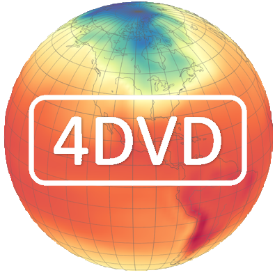

About
Home
Short Bio
CV
Contact Info
Teaching
Teaching History
Progressive Education
RUM Principle
Research
Research Summary
Research Group
Research Publications
Research Papers
News
Research News
Media Reports
Resources
4DVD Data Visualization
Climate Mathematics Python
Climate Mathematics R
Climate Statistics Python
Climate Statistics R
Python Tutorial
R Tutorial
Climate Research Links
Menu
☰
Home
Biography
Teaching History
Curriculum Vitae
Research Summary
Research Group
Research Publications
Research Papers
Research News
Climate Research Links
RUM Principle
Progressive Education
Media Reports
Contact
Menu
☰
Home
Biography
Teaching History
Curriculum Vitae
Research Summary
Research Group
Research Publications
Research Papers
Research News
Climate Research Links
RUM Principle
Progressive Education
Media Reports
Contact
Media Reports
SDSU is on a NOAA Educational Partnership Program award for five years: NOAA awards $11.9 million to four minority serving institutions to train the next generation of scientists (08/29/2016)
San Diego News Channel: KUSI TV Interview of Sam Shen and Nancy Tafolla on Weather History Time Machine (10/23/2014)
New Climate Time Machine Is Not a DeLorean, But It's Almost As Cool (10/23/2014)
National Science Foundation News: Weather History Time Machine (10/15/2014)
Science Daily: Weather History Time Machine Created (10/15/2014)
SDSU Newscenter Press Release: Weather History Time Machine (10/15/2014)
Sam Shen
made the
ceremonial first-pitch
at the PetCo Park stadium, San Diego, before the game of San Diego Padres vs. San Francisco Giants (09/20/2014)
Sam Shen's SDSU team is with UCLA and Colorado State University receiving a 4-year major $2.1 million National Science Foundation grant: EaSM-3 Surface-induced forcing and decadal variability and change of the East Asian climate, surface hydrology and agriculture – A modeling and data approach (08/01/2014)
SDSU Newscenter: Ghosts of Climates Past (03/03/2014)
KPBS TV Announcement of 2014 Albert W. Johnson Lecture given by Distinguished Professor Sam Shen (01/27/2014)
SDSU Front Page Report on Sam Shen: Scaling Mountains, Then Moving Them (01/08/2014)
SDSU Study Abroad Program on Climate at Xiamen University (07/19/2013)
China Central TV (CCTV) Evening News: Dr. Shen was one of the distinguished overseas Chinese scholars honored by Chinese President Mr. Hu Jintao on the occassion of China's National Day Celebration Ceremony (09/30/2009).
CCTV exclusive interview with Dr. Shen on the China rural education project (12/06/2003).
History Channel: Human Calculator Demo at SDSU (02/15/2010)
China CCTV Interview with Dr. Shen (12/06/2003)
Canada CBC Radio Interview with Dr. Shen (03/31/2004)
Xiamen University Speech (04/07/2011)
Chinese Overseas Scholars Association (3/7/2011)
SDSUniverse: Sam Shen fights fire with math. March 9, 2009
Nanjing University of Sci and Tech, My Dream (11/08/2008)
Yangtze Daily (06/10/2007)
Xinhua Daily, Dream of China (03/03/2006)
University of Alberta, Faculty of Science (10/18/2004)
People's Daily Newsnet (10/10/2004)
Across the Straight Program, CCTV Special Report (12/06/2003)
Science Technology Daily Net (11/14/2003)
East Day (09/03/2001)
Science Technology Daily (12/18/2001)
Popular Science News (09/09/2001)
CAS President's invitation (06/25/2001)
CAS appointment (09/09/2001)
Science Technology Daily (12/23/2001)
Science Technology Daily (12/18/2001)
Science Times (09/07/2001)
People's Daily Overseas Edition (09/05/2001)
Guangming Daily (09/05/2001)
Guangming Daily (09/05/2001)
United Front (09/04/2001)
Graduate School, Chinese Academy of Sciences (9/11/2001)
Human Resource and Education, Chinese Academy of Sciences (10/30/2001)
Science Times (09/07/2001)
People's Daily Online (09/05/2001)
Xinhua News (9/05/2001)
Xinhua News (9/05/2001)
Chinese Scholars (09/13/2001)
Xinhua News (9/05/2001)
Chinese Voice (09/06/2001)
China News (9/05/2001)
China Talents (09/09/2001)
Suzhou News (09/05/2001)
Sichuan Education (09/07/2001)
Dayoo News (09/04/2001)
Chinese Global (09/2001)
China Education (09/05/2001)
Study In China (09/05/2001)
Science Technology Daily (09/06/2001)
People's Daily Overseas Edition (09/05/2001)
Beijing News (09/05/2001)
Beijing News (09/05/2001)
China Liaoning Overseas Chinese (09/16/2001)
Net Ease (09/04/2001)
Ningbo Today (09/05/2001)
Sinanet (09/05/2001)
Shangdu News (09/05/2001)
Academy of Mathematics and Systems Science (09/03/2001)
NASA Goddard Space Flight Center (01/15/2002)
Guangming Daily (01/20/2002)
Guangming Net (01/20/2002)
China News (09/05/2001)
Chinese Academy of Sciences (12/16/1999)
People's Daily News (09/05/2001)
Sina News Center (09/05/2001)